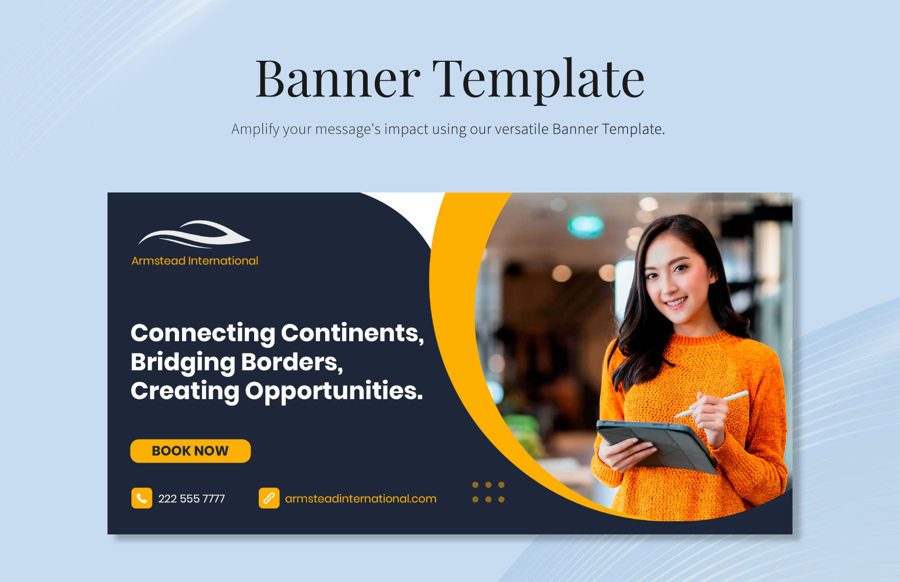

Human vs Machine
The primary visual statement — where human craft confronts machine precision.
A visual editorial exploring craft, authorship, and the messy line between human judgment and synthetic output. Built like a magazine, experienced like a gallery.
Every image displayed in full view. No crops. No compromises. Each piece tells a story of human creativity meeting machine precision.
The primary visual statement — where human craft confronts machine precision.

Bold typography meets dynamic composition in this editorial poster.

Wide-format design exploring the boundaries of digital composition.

A focused piece on the intersection of tradition and innovation.

Geometric precision meets artistic expression in this compact statement.

A template that bridges personal expression with digital design.

Full-scale web advertising design — where marketing meets machine learning.
Experimental visual exploring the boundaries of automated design.
.jpg)
Commercial poster design for instant loans — advertising meets automation.

Wide-format event banner — 3:2 aspect ratio for cultural celebration.

Ultra-wide 3:1 banner design for event branding in Varanasi.
.png)
High-fidelity PNG artwork exploring digital craft.
.png)
High-fidelity PNG artwork exploring digital craft.
Full-screen banner poster template — the machinery behind the design.
Commercial sale banner — where promotional design meets vector precision.
This visual experience treats automation as a force that should be examined, not worshipped. Every image asks a simple question: can viewers still tell where human thought happened?
In an age of instant plausibility, we choose to slow down. Each poster, each banner, each frame is a testament to the friction between human judgment and synthetic output.
Generated text often arrives looking complete before it has earned the right to be trusted. Good design exposes its process.
Every image here asks: who made this? The answer should never be obvious.
Smooth outputs hide rough thinking. We choose rough outputs that hide smooth thinking.